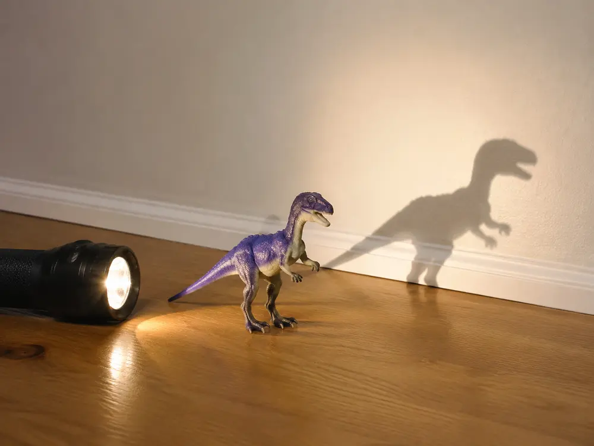

Science homework can feel intimidating—especially when your child asks a question you cannot immediately answer.
The good news is that you do not need to be a scientist to help. You do not need expensive experiment kits, complicated explanations or all the correct answers. Your most valuable role is to encourage curiosity, ask useful questions and help your child connect classroom learning with everyday life.
Good Science Homework Is About More Than Repetition
Not all homework serves the same purpose. Some activities prepare children for a new topic, while others help them practise or apply what they have learned.
| Type of homework | What it does | Simple example |
|---|---|---|
| Preparatory | Introduces a topic before a lesson | Read or watch a short explanation about light |
| Reinforcement | Practises learning from class | Complete a worksheet about light sources |
| Extension | Applies learning in a new or real-life situation | Find and classify five light sources around the home |
A 2025 Grade 4 science study compared preparatory, reinforcement and extension homework during a unit about light and sound technologies. All three types supported learning, but extension homework produced the strongest results within that particular study.
Why Real-Life Science Activities Can Help
Science is already happening all around your child. They can observe a shadow changing during the day, compare leaves at the park, watch an ice cube melt or investigate which household objects float.
Activities like these connect classroom vocabulary with something children can see and experience. Research into informal science learning also indicates that parents and carers can support children through everyday conversations, shared observations and encouragement—even without specialist science knowledge.
Five Ways to Help With Science Homework
1. Encourage curiosity
Start with something your child already finds interesting. If they are curious about colours, provide red, yellow and blue paint and ask:
- What new colours can you create?
- What happens when you use more of one colour?
- Can you make the same colour twice?
The goal is not simply to produce the correct result. It is to encourage your child to predict, test, observe and explain.
2. Use materials you already have
Useful science activities do not need to be expensive. Your child could:
- Compare how quickly ice melts in different places.
- Sort leaves by size, shape or texture.
- Test which safe household objects float or sink.
- Observe how shadows change at different times of the day.
- Investigate which materials absorb water.
Ask what they think will happen before starting. Afterwards, invite them to compare the result with their prediction.
3. Keep it playful
Science learning does not always need to feel like a formal lesson. Children can create different sounds using safe containers, observe a plant near a sunny window or investigate a toy's shadow.
Try questions such as:
- What do you notice?
- Why do you think that happened?
- What could we change next time?
- How could we test your idea?
4. Find answers together
It is perfectly acceptable to say, “I’m not sure—let’s find out together.” This shows your child that not knowing something is the beginning of an investigation, not a failure.
Before searching for an answer, ask your child to make a prediction. Then use a trusted book, school resource or age-appropriate website to investigate together. Help them understand the question and organise their thoughts, but let them explain the answer in their own words.
5. Talk to your child’s teacher
If science homework regularly feels confusing or too difficult, contact your child’s teacher. You might ask:
- Which science topic is the class currently studying?
- What vocabulary should my child understand?
- Are there simple activities we can try at home?
- How much help should I provide?
- Is my child expected to write a full explanation or record observations?
🔦 One-Minute Science: Shadow Hunt
You will need: a torch, a small toy and a wall or sheet of white card.
- Place the toy between the torch and the wall.
- Move the torch closer to the toy. What happens to the shadow?
- Move the torch farther away. How does the shadow change?
Ask your child: “Why do you think the shadow became larger or smaller?”
Science connection: a shadow forms when an object blocks light. Changing the distance between the light source and object can change the shadow’s size.
Safety: never shine the torch into anyone’s eyes.

Helping a Year 4 Child Explain Their Thinking
Year 4 students are often asked to move beyond naming or identifying things. They may need to compare, classify, predict, observe patterns and explain why something happened. Exact topics and curriculum timing can vary, so follow the task set by your child’s teacher.
You can support deeper thinking by asking your child to explain the evidence behind an answer. Instead of only saying, “That’s right,” try:
“What did you observe that helped you decide?”
This encourages your child to think scientifically while still completing the work independently.
You Don’t Need All the Answers
Helping with science homework is not about remembering every scientific fact. It is about showing your child how to remain curious, examine evidence and keep trying when an answer is not immediately obvious.
A conversation at the kitchen table, an observation during a walk or a question such as “What do you think will happen?” can turn an ordinary moment into meaningful science learning.
Free Australian Curriculum Science Worksheets
Explore free printable science worksheets for Australian primary students from Foundation to Year 6. Resources are designed with reference to Australian Curriculum v9.0 content, with answer support where provided.
Related Free Resources
Frequently Asked Questions
Do I need science knowledge to help my child with homework?
No. Help your child read the task, ask questions, make predictions and find reliable information. You do not need to supply every answer.
How much help should I give?
Support your child to understand the instructions and organise their thinking, but let them record observations and explain conclusions in their own words.
What is a simple science activity to try at home?
Use a torch, small toy and wall to investigate shadows. Move the torch closer to and farther from the toy, then compare how the shadow changes.
What if science homework causes frustration?
Pause, clarify one instruction at a time and contact the teacher if the difficulty continues. Homework should show what a child understands, not become a parent-completed task.
Are Aussie Primary Academy science worksheets free?
Yes. Our science worksheets are free to view and download without creating an account.
Research Sources
- Öztaş, C., Bay, E. and Kahramanoğlu, R. (2025). The evaluation of contributions of homework purposes to learning. European Journal of Psychology of Education, 40, Article 118.
- Dettmers, S., Trautwein, U., Lüdtke, O., Kunter, M. and Baumert, J. (2010). Homework works if homework quality is high. Journal of Educational Psychology, 102(2), 467–482.
- InformalScience.org. Role of Parents and Caregivers in Supporting Science Learning for Young Children.